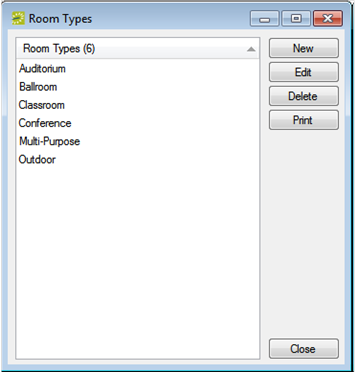

Configure Room Types
A room type is the class or category of the room (e.g., a meeting room, an auditorium, a workspace, a multi-purpose room, etc.). Users can use room types to filter search results.
- On the menu bar, click Configuration > Facilities > Room Types. The Room Types window opens. This window lists all the room types that are currently configured in your database.
Room Types Window

- Click New. The Room Type dialog box opens.
- In the Room Type field, enter a name or description for the new room type. The room type can be a maximum of 50 characters, including spaces.
- If you want all Everyday Users to see this room type when they are searching for available space, leave Available to Everyday Users selected.
- Click OK. The Room Type dialog box closes. You return to the Room Types window with the newly configured room type automatically selected.
Tip: An Override Room is used in EMS to loosely define useable space which is not formally configured. See Also: Configure Override Rooms.